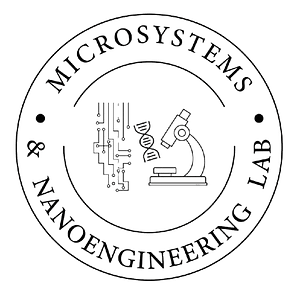

Undergraduate Research Student · Supervisor: Dr. Imtiaz Ahmed
Research Interests — AI/ML assisted materials discovery, energy storage materials, nanomaterials synthesis & characterization, supercapacitor and micro/nano-engineered devices.
Current Work — Machine-Learning & DFT-Guided Electrode Design for Oxide-based Supercapacitors: From Data Mining to Experimental Validation. Perovskite-oxide electrodes have a design space far too large to search by synthesis alone. We are building a computation-guided closed-loop pipeline that narrows it in stages — cheap, broad screening first, expensive and precise validation last — so that experimental effort is spent only on candidates that have already survived both statistical and first-principles scrutiny.
Stage 1 is computational. A descriptor dataset mined from the published experimental literature — spanning chemistry, structure, processing and testing conditions — trains a ranking model for specific capacitance, with SHAP and PDP explainability used to surface the physical drivers rather than treat the model as a black box. A stability screen then narrows the shortlist before first-principles work begins, concentrating compute on the candidates most likely to survive it.
Stage 2 is experimental. Validated candidates are synthesized toward the nanoscale regime where near-surface Faradaic storage dominates, fabricated into electrodes, structurally characterized and electrochemically tested — and the measured performance returns to the dataset, closing the loop.
The longer-term aim is generality. The whole architecture is not designed only for supercapacitors specifically. We have instantiated it for single-perovskite ABO₃ electrodes because that is where our screening and characterization capacity lies, but the same structure applies to any property or application anywhere. Also, given the synthesis and characterization can themselves be automated, the loop can even be closed without any human intervention at all; directing towards a self-driving lab possibility!
I have another work (a personal project; aimed at a much smaller scale) that simulates a similar self-driving design automation architecture for a MEMS Pressure Microsensor Device, if you feel interested you can check here.
Collaborating labs

Microsystems & Nanoengineering Lab PI: Dr. Saeed Mahmud Ullah · Dr. Md. Ahsan Habib Dept. of EEE, University of Dhaka Electrode Fabrication Nanotechnology Research Lab
PI: Dr. Mohammed Abdul Basith
Dept. of Physics, BUET
Supercapacitor Characterization
Nanotechnology Research Lab
PI: Dr. Mohammed Abdul Basith
Dept. of Physics, BUET
Supercapacitor Characterization
Facilities & instrumentation